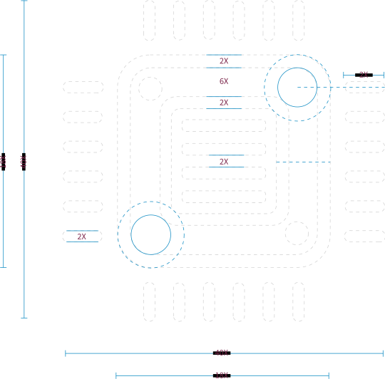
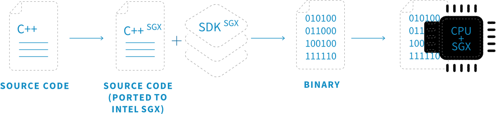
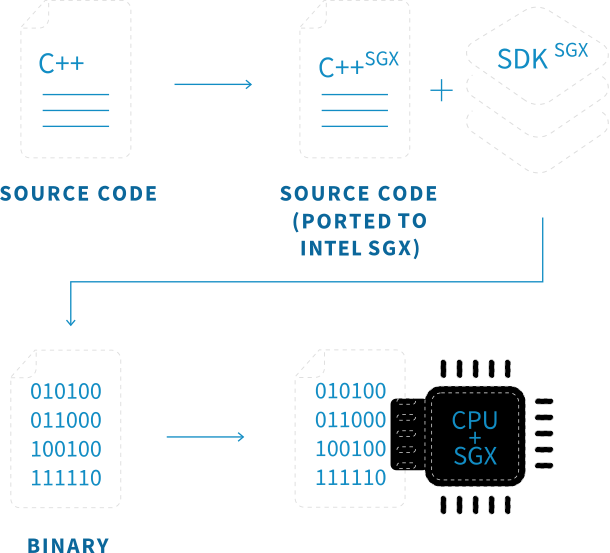
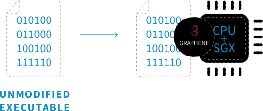

Gramine - a Library OS for Unmodified Applications
Open-Source community project driven by a core team of contributors.
Previously Graphene
A few words about Gramine
Applications programmed for one system often do not work on another. Gramine bridges this gap by hoisting application-facing code from the operating system (OS) kernel into a userspace library. Gramine uses a platform adaptation layer (PAL) that is easy to implement on a new host system. As long as a system implements the PAL interface, all of POSIX/Linux will follow.
Gramine is a library OS, similar to a unikernel. Compared to running a complete guest OS in a virtual machine (VM), Gramine is much lighter weight. Work is ongoing to integrate Gramine with Docker containers.
A particular use case for Gramine is Intel® Software Guard Extensions (Intel® SGX), where applications do not work out-of-the-box. Gramine solves this problem, with the added security benefits. Gramine can serve as a compatibility layer on other platforms.
Intel SGX integration made simple
Regular integration of Intel SGX


Integration of Intel SGX with Gramine

Applications can benefit from confidentiality and integrity guarantees of Intel SGX, but developers need to be very skilled for effective partitioning and code modification for Intel SGX environment.
Gramine runs unmodified applications inside Intel
SGX. It supports dynamically loaded libraries, runtime linking, multi-process abstractions, and file authentication. For additional security, Gramine performs cryptographic and semantic checks at untrusted host interface. Developers provide a manifest file to configure the application environment and isolation policies, Gramine automatically does the rest.
The commitment behind Gramine
Graphene started as a research project at Stony Brook University, led by Chia-Che Tsai and Don Porter. Over time, scientists at other universities and labs have contributed to Graphene to accelerate their research on emerging hardware platforms.
In 2015, Intel Labs recognized the potential for Graphene to be an open-source compatibility layer for Intel SGX, and has contributed to Graphene development since.
Golem and Invisible Things Lab (ITL) have identified similarly opportunity for Graphene to play a huge role in the decentralized ecosystem, where data integrity, confidentiality, and security are cornerstones to the robust development of infrastructure and applications. Driving Graphene and ensuring its usability is part of Golem's commitment.
Today, there is a strong team of developers and researchers from these companies working together with the founders of the project (now faculty at UNC and Texas A&M) to make sure it meets the highest quality standards with the easiness of integration. Gramine has a growing user and contributor community. It has the potential to become a standard in the Intel SGX world and can be adopted by a broad variety of use cases in a diverse technological landscape.
Past and future plans
2011
Graphene development starts in OSCAR LAB at Stony Brook University
arrow_right
2013
arrow_right
First paper is published at EuroSys and first public release
2015
Graphene for Intel SGX development starts in Intel Research Lab
arrow_right
Graphene for Intel SGX public release
2017
arrow_right
ITL/Golem get involved in the project
Graphene for Intel SGX paper is published at USENIX ATC
ITL/Golem work to deploy Graphene for Intel SGX in Golem Network and add more features
2018
arrow_right
First working Graphene integration - demo with Golem
The Graphene working group is established
2019
arrow_right
Building contributors' community
Delivered first major release v1.0 with new documentation and application examples
Delivered release (v1.1) with Protected FileSystem, Remote Attestation, and Docker integration
2020
arrow_right
Performance optimized with Exitless stable version
Deployed in Azure cloud, Secure PPML tutorial
2021
arrow_right
Improved Manifest format
Java, Go, Spark, Node.js, and additional runtimes
Planning for production ready release and optimized ML frameworks
Integration with cloud-based container deployments
Join Confidential Computing Consortium with the new name Gramine
Gramine 1.0 released
2022
arrow_right
EDMM support
Future TEE Backends